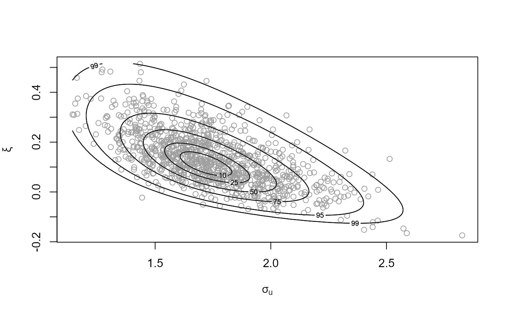
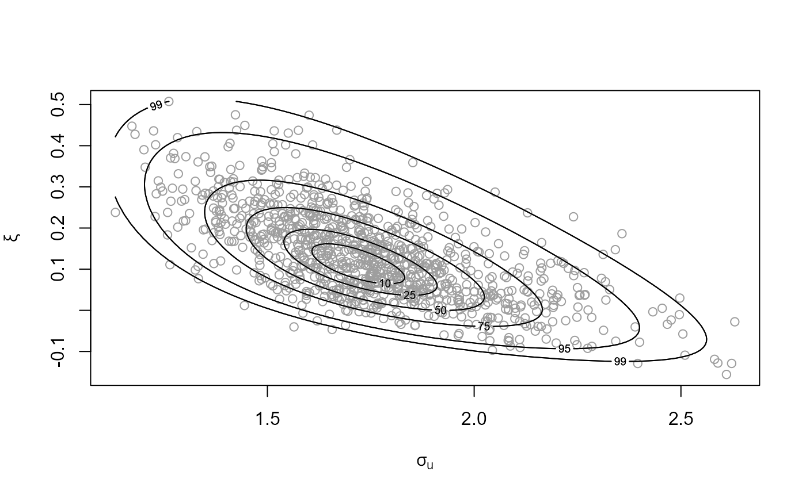
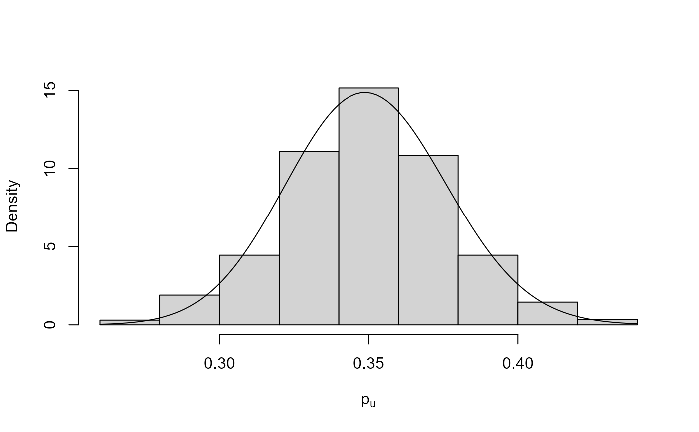
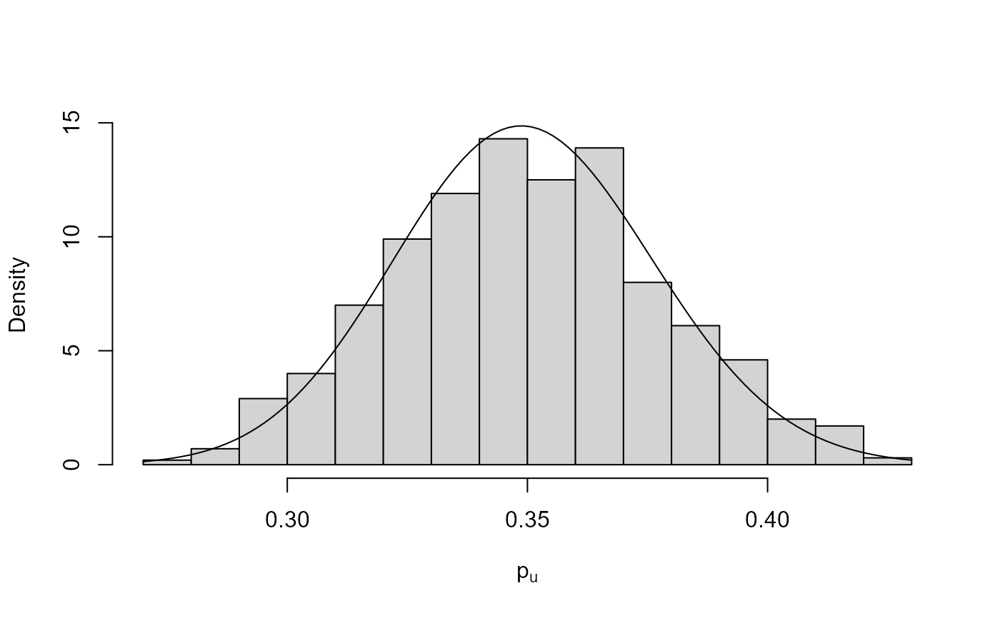

R/rposterior_rcpp.R
rpost_rcpp.RdUses the ru_rcpp function in the
rust package to simulate from the posterior distribution
of an extreme value model.
A numeric scalar. The size of posterior sample required.
A character string. Specifies the extreme value model.
Sample data, of a format appropriate to the value of
model.
"gp" A numeric vector of threshold excesses or raw data.
"bingp" A numeric vector of raw data.
"gev" A numeric vector of block maxima.
"pp" A numeric vector of raw data.
"os" A numeric matrix or data frame. Each row should contain
the largest order statistics for a block of data. These need not
be ordered: they are sorted inside rpost. If a block
contains fewer than dim(as.matrix(data))[2] order statistics
then the corresponding row should be padded by NAs. If
ros is supplied then only the largest ros values in
each row are used. If a vector is supplied then this is converted
to a matrix with one column. This is equivalent to using
model = "gev".
A list specifying the prior for the parameters of the extreme
value model, created by set_prior.
Further arguments to be passed to ru_rcpp.
Most importantly trans and rotate (see Details),
and perhaps r, ep, a_algor, b_algor,
a_method, b_method, a_control, b_control.
May also be used to pass the arguments n_grid and/or ep_bc
to find_lambda.
A numeric scalar. If nrep is not NULL then
nrep gives the number of replications of the original dataset
simulated from the posterior predictive distribution.
Each replication is based on one of the samples from the posterior
distribution. Therefore, nrep must not be greater than n.
In that event nrep is set equal to n.
Currently only implemented if model = "gev" or "gp" or
"bingp" or "pp", i.e. not implemented if
model = "os".
A numeric scalar. Extreme value threshold applied to data.
Only relevant when model = "gp", "pp" or "bingp".
Must be supplied when model = "pp" or "bingp".
If model = "gp" and thresh is not supplied then
thresh = 0 is used and data should contain threshold
excesses.
A numeric scalar. The number of blocks of observations,
excluding any missing values. A block is often a year.
Only relevant, and must be supplied, if model = "pp".
A logical scalar. Only relevant if model is "pp".
If use_noy = FALSE then sampling is based on a likelihood in
which the number of blocks (years) is set equal to the number of threshold
excesses, to reduce posterior dependence between the parameters
(Wadsworth et al., 2010).
The sampled values are transformed back to the required parameterisation
before returning them to the user. If use_noy = TRUE then the
user's value of noy is used in the likelihood.
A numeric scalar. The mean number of observations per year of data, after excluding any missing values, i.e. the number of non-missing observations divided by total number of years' worth of non-missing data.
The value of npy does not affect any calculation in
rpost, it only affects subsequent extreme value inferences using
predict.evpost. However, setting npy in the call to
rpost avoids the need to supply npy when calling
predict.evpost. This is likely to be useful only when
model = bingp. See the documentation of
predict.evpost for further details.
A numeric scalar. Only relevant when model = "os". The
largest ros values in each row of the matrix data are used
in the analysis.
A list specifying the prior for a binomial probability
\(p\), created by set_bin_prior. Only relevant if
model = "bingp". If this is not supplied then the Jeffreys
beta(1/2, 1/2) prior is used.
A numeric vector. Initial parameter estimates for search for the mode of the posterior distribution.
A numeric scalar. The grid of values used to choose the Box-Cox transformation parameter lambda is based on the maximum a posteriori (MAP) estimate +/- mult x estimated posterior standard deviation.
A logical scalar. If trans = "BC" then use_phi_map
determines whether the grid of values for phi used to set lambda is
centred on the maximum a posterior (MAP) estimate of phi
(use_phi_map = TRUE), or on the initial estimate of phi
(use_phi_map = FALSE).
An object (list) of class "evpost", which has the same
structure as an object of class "ru" returned from
ru_rcpp. In addition this list contains
model: The argument model to rpost
detailed above.
data: The content depends on model:
if model = "gev" then this is the argument data to
rpost detailed above, with missing values removed;
if model = "gp" then only the values that lie above the
threshold are included; if model = "bingp" or
model = "pp" then the input data are returned
but any value lying below the threshold is set to thresh;
if model = "os" then the order statistics used are returned
as a single vector.
prior: The argument prior to rpost
detailed above.
logf_rho_args: A list of arguments to the (transformed)
target log-density.
If nrep is not NULL then this list also contains
data_rep, a numerical matrix with nrep rows. Each
row contains a replication of the original data data simulated from the posterior predictive distribution.
If model = "bingp" or "pp" then the rate of threshold
exceedance is part of the inference. Therefore, the number of values in
data_rep that lie above the threshold varies between
predictive replications (different rows of data_rep).
Values below the threshold are left-censored at the threshold, i.e. they
are set at the threshold.
If model == "pp" then this list also contains the argument
noy to rpost detailed above.
If the argument npy was supplied then this list also contains
npy.
If model == "gp" or model == "bingp" then this list also
contains the argument thresh to rpost detailed above.
If model == "bingp" then this list also contains
bin_sim_vals: An n by 1 numeric matrix of values
simulated from the posterior for the binomial
probability \(p\)
bin_logf: A function returning the log-posterior for
\(p\).
bin_logf_args: A list of arguments to bin_logf.
Generalised Pareto (GP): model = "gp". A model for threshold
excesses. Required arguments: n, data and prior.
If thresh is supplied then only the values in data that
exceed thresh are used and the GP distribution is fitted to the
amounts by which those values exceed thresh.
If thresh is not supplied then the GP distribution is fitted to
all values in data, in effect thresh = 0.
See also gp.
Binomial-GP: model = "bingp". The GP model for threshold
excesses supplemented by a binomial(length(data), \(p\))
model for the number of threshold excesses. See Northrop et al. (2017)
for details. Currently, the GP and binomial parameters are assumed to
be independent a priori.
Generalised extreme value (GEV) model: model = "gev". A
model for block maxima. Required arguments: n, data,
prior. See also gev.
Point process (PP) model: model = "pp". A model for
occurrences of threshold exceedances and threshold excesses. Required
arguments: n, data, prior, thresh and
noy.
r-largest order statistics (OS) model: model = "os".
A model for the largest order statistics within blocks of data.
Required arguments: n, data, prior. All the values
in data are used unless ros is supplied.
Parameter transformation. The scalar logical arguments (to the
function ru) trans and rotate determine,
respectively, whether or not Box-Cox transformation is used to reduce
asymmetry in the posterior distribution and rotation of parameter
axes is used to reduce posterior parameter dependence. The default
is trans = "none" and rotate = TRUE.
See the Introducing revdbayes vignette for further details and examples.
Coles, S. G. and Powell, E. A. (1996) Bayesian methods in extreme value modelling: a review and new developments. Int. Statist. Rev., 64, 119-136.
Northrop, P. J., Attalides, N. and Jonathan, P. (2017) Cross-validatory extreme value threshold selection and uncertainty with application to ocean storm severity. Journal of the Royal Statistical Society Series C: Applied Statistics, 66(1), 93-120. doi: 10.1111/rssc.12159
Stephenson, A. (2016) Bayesian Inference for Extreme Value Modelling. In Extreme Value Modeling and Risk Analysis: Methods and Applications, edited by D. K. Dey and J. Yan, 257-80. London: Chapman and Hall. doi: 10.1201/b19721 value posterior using the evdbayes package.
Wadsworth, J. L., Tawn, J. A. and Jonathan, P. (2010) Accounting for choice of measurement scale in extreme value modeling. The Annals of Applied Statistics, 4(3), 1558-1578. doi: 10.1214/10-AOAS333
set_prior for setting a prior distribution.
rpost for posterior simulation without using
the Rcpp package.
plot.evpost, summary.evpost and
predict.evpost for the S3 plot, summary
and predict methods for objects of class evpost.
ru_rcpp in the rust
package for details of the arguments that can be passed to
ru_rcpp and the form of the object returned by rpost_rcpp.
find_lambda in the
rust package is used inside rpost to set the
Box-Cox transformation parameter lambda when the trans = "BC"
argument is given.
# GP model
u <- quantile(gom, probs = 0.65)
fp <- set_prior(prior = "flat", model = "gp", min_xi = -1)
gpg <- rpost_rcpp(n = 1000, model = "gp", prior = fp, thresh = u,
data = gom)
plot(gpg)

# GP model, user-defined prior (same prior as the previous example)
ptr_gp_flat <- create_prior_xptr("gp_flat")
p_user <- set_prior(prior = ptr_gp_flat, model = "gp", min_xi = -1)
gpg <- rpost_rcpp(n = 1000, model = "gp", prior = p_user, thresh = u,
data = gom)
plot(gpg)

# Binomial-GP model
u <- quantile(gom, probs = 0.65)
fp <- set_prior(prior = "flat", model = "gp", min_xi = -1)
bp <- set_bin_prior(prior = "jeffreys")
bgpg <- rpost_rcpp(n = 1000, model = "bingp", prior = fp, thresh = u,
data = gom, bin_prior = bp)
plot(bgpg, pu_only = TRUE)

plot(bgpg, add_pu = TRUE)
# Setting the same binomial (Jeffreys) prior by hand
beta_prior_fn <- function(p, ab) {
return(stats::dbeta(p, shape1 = ab[1], shape2 = ab[2], log = TRUE))
}
jeffreys <- set_bin_prior(beta_prior_fn, ab = c(1 / 2, 1 / 2))
bgpg <- rpost_rcpp(n = 1000, model = "bingp", prior = fp, thresh = u,
data = gom, bin_prior = jeffreys)
plot(bgpg, pu_only = TRUE)

plot(bgpg, add_pu = TRUE)
# GEV model
mat <- diag(c(10000, 10000, 100))
pn <- set_prior(prior = "norm", model = "gev", mean = c(0, 0, 0), cov = mat)
gevp <- rpost_rcpp(n = 1000, model = "gev", prior = pn, data = portpirie)
plot(gevp)
# GEV model, user-defined prior (same prior as the previous example)
mat <- diag(c(10000, 10000, 100))
ptr_gev_norm <- create_prior_xptr("gev_norm")
pn_u <- set_prior(prior = ptr_gev_norm, model = "gev", mean = c(0, 0, 0),
icov = solve(mat))
gevu <- rpost_rcpp(n = 1000, model = "gev", prior = pn_u, data = portpirie)
plot(gevu)
# GEV model, informative prior constructed on the probability scale
pip <- set_prior(quant = c(85, 88, 95), alpha = c(4, 2.5, 2.25, 0.25),
model = "gev", prior = "prob")
ox_post <- rpost_rcpp(n = 1000, model = "gev", prior = pip, data = oxford)
plot(ox_post)
# PP model
pf <- set_prior(prior = "flat", model = "gev", min_xi = -1)
ppr <- rpost_rcpp(n = 1000, model = "pp", prior = pf, data = rainfall,
thresh = 40, noy = 54)
plot(ppr)
# PP model, user-defined prior (same prior as the previous example)
ptr_gev_flat <- create_prior_xptr("gev_flat")
pf_u <- set_prior(prior = ptr_gev_flat, model = "gev", min_xi = -1,
max_xi = Inf)
ppru <- rpost_rcpp(n = 1000, model = "pp", prior = pf_u, data = rainfall,
thresh = 40, noy = 54)
plot(ppru)
# PP model, informative prior constructed on the quantile scale
piq <- set_prior(prob = 10^-(1:3), shape = c(38.9, 7.1, 47),
scale = c(1.5, 6.3, 2.6), model = "gev", prior = "quant")
rn_post <- rpost_rcpp(n = 1000, model = "pp", prior = piq, data = rainfall,
thresh = 40, noy = 54)
plot(rn_post)
# OS model
mat <- diag(c(10000, 10000, 100))
pv <- set_prior(prior = "norm", model = "gev", mean = c(0, 0, 0), cov = mat)
osv <- rpost_rcpp(n = 1000, model = "os", prior = pv, data = venice)
plot(osv)